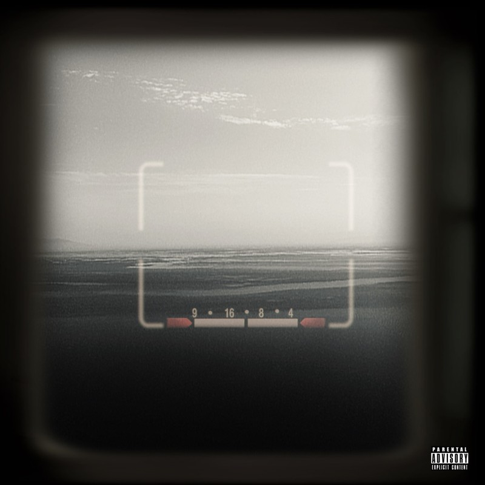

Listen on QQ Music ↗LEON
Cameras On
About the release
对于一段喜欢的乐器或旋律，我会重复播放，这也是为什么这张专辑将会听起来“平”的原因。 以前喜欢一首歌，就会单曲循环，当然了，现在也是。 这张正规一，献给我，作为“音乐人”“歌手”的这么几个月 PRODUCED BY Hito(MAXIM)
Track List (10)
- 01Apollo 112:29
- 02Avenue3:23
- 03Cloudy3:04
- 04Glory3:21
- 05Gravity2:31
- 06Island3:09
- 07RE:BIRTH3:23
- 08silver rain2:43
- 09strange week3:19
- 10sunset strip2:59
Album information · QQ Music ↗